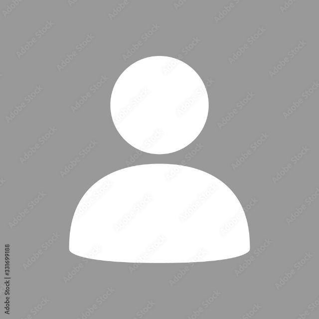
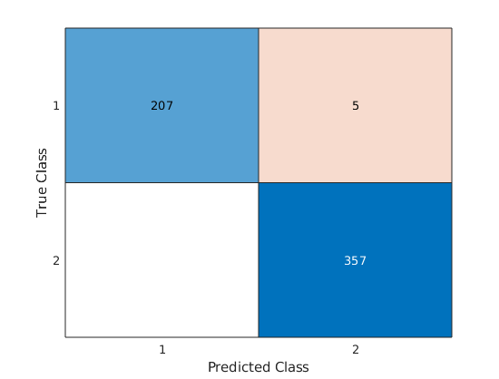
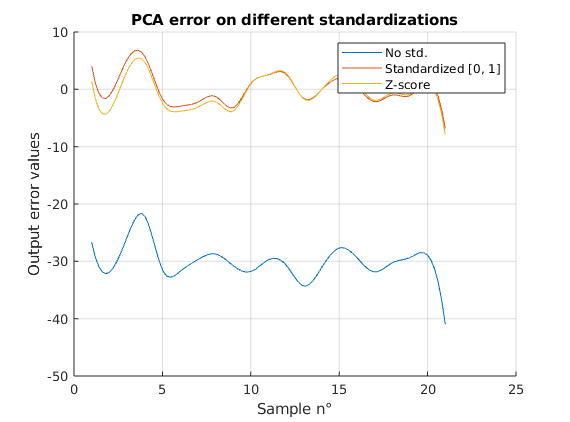

Présentation · automatisme · systèmes · logiciel
Bonjour,
moi c’est Maël.
Je m’intéresse à la robotique et la commande
Je conçois et j’étudie des systèmes, de leur modélisation et leur commande jusqu’à leur mise en œuvre. Ce portfolio réunit des projets en robotique, systèmes embarqués, analyse de données et développement logiciel.
Projets
De la simulation à l’intégration matérielle, en passant par l’analyse de données et le jeu.
 Robotique · commande
Robotique · commande
Tangram robotisé avec UR5e
Une interface permet de composer un tangram, puis transmet au robot UR5e les poses nécessaires pour saisir et placer ses sept pièces.
Tangram robotisé avec UR5e
Une interface permet de composer un tangram, puis transmet au robot UR5e les poses nécessaires pour saisir et placer ses sept pièces.
Pitch
Composer un tangram sur écran et faire assembler ses pièces par un robot UR5e.
Contexte et objectifs
Développé dans le cadre d’un cours de commande robotique, le projet fait le lien entre une disposition 2D définie par l’utilisateur et une manipulation réelle. L’objectif est de convertir le tangram en poses cibles, puis d’ordonner les opérations de prise et de dépôt des sept pièces.
Quelques images

Décisions techniques et résultats
- Une interface de bureau en Python permet de construire et vérifier la disposition avant son exécution.
- Une liaison TCP/IP transmet au robot les poses cibles et la séquence de prise et de dépôt.
- Le projet relie la commande logicielle à une démonstration de manipulation physique par un UR5e.
Illustration indisponible
Systèmes embarqués
Asservissement d’un moteur CC
Firmware STM32F411 pour mesurer et réguler la vitesse d’un moteur à courant continu, avec encodeur, commande PWM et télémétrie série.
Asservissement d’un moteur CC
Firmware STM32F411 pour mesurer et réguler la vitesse d’un moteur à courant continu, avec encodeur, commande PWM et télémétrie série.
Pitch
Mesurer et réguler la vitesse d’un moteur à courant continu avec une carte STM32F411.
Contexte et objectifs
Le projet porte sur la réalisation embarquée d’un système d’asservissement en vitesse, en interaction avec un moteur, son encodeur et un étage de puissance. Il vise à acquérir les mesures du moteur, appliquer une commande et rendre les données disponibles pour l’analyse.
Quelques images
Décisions techniques et résultats
- Un encodeur fournit le retour de vitesse, tandis qu’une entrée ADC mesure la tension liée au courant moteur.
- Un PID discret calcule la commande et le PWM pilote le moteur ; USART2 transporte les consignes et la télémétrie.
- Des notebooks complètent le firmware pour simuler le moteur et analyser les données série.
 Modélisation · commande
Modélisation · commande
Modélisation floue d’un hélicrane
Étude de modèles flous locaux pour identifier la dynamique d’un procédé de type hélicrane et expérimenter une commande basée sur le modèle.
Modélisation floue d’un hélicrane
Étude de modèles flous locaux pour identifier la dynamique d’un procédé de type hélicrane et expérimenter une commande basée sur le modèle.
Pitch
Construire un modèle flou local de l’hélicrane, puis évaluer une commande fondée sur ce modèle.
Contexte et objectifs
Cette étude MATLAB explore l’identification d’un procédé non linéaire de type hélicrane. L’objectif est d’approcher ses relations entrée-sortie par plusieurs modèles locaux et d’étudier leur utilisation dans un contrôleur au moyen de simulations.
Quelques images

Décisions techniques et résultats
- Le procédé non linéaire est identifié à partir de données d’excitation et représenté par des modèles flous locaux.
- La commande est évaluée en simulation sur différentes consignes, dont des échelons et un signal chirp.
- Les courbes permettent de comparer la réponse simulée du contrôleur à la référence, sans présenter le travail comme un système de vol déployable.
 Développement logiciel · jeu
Développement logiciel · jeu
Reignib — gouverner un pays fictif
Un jeu à choix où chaque décision fait évoluer quatre équilibres — industrie, population, climat et finances — et rend visibles leurs compromis.
Reignib — gouverner un pays fictif
Un jeu à choix où chaque décision fait évoluer quatre équilibres — industrie, population, climat et finances — et rend visibles leurs compromis.
Pitch
Gouverner un pays fictif en arbitrant les conséquences de chaque décision.
Contexte et objectifs
Reignib est un jeu de bureau développé en Python autour d’une boucle de décisions : le joueur répond à des événements en choisissant entre deux options. Le projet rend visibles les compromis entre des décisions de court terme et leurs effets sur les équilibres du pays.
Quelques images

Décisions techniques et résultats
- Chaque événement propose deux choix qui influencent quatre indicateurs : industrie, population, climat et finances.
- La boucle de jeu met en scène les effets croisés des décisions et permet de parcourir plusieurs événements.
- Le résultat est un jeu jouable, accompagné de ses ressources visuelles et de son code Python.
 Optimisation · apprentissage
Optimisation · apprentissage
Classification par PSO et réseau de neurones
Comparaison de l’optimisation par essaim particulaire et d’un réseau de neurones pour classifier des tumeurs à partir du jeu de données Wisconsin.
Classification par PSO et réseau de neurones
Comparaison de l’optimisation par essaim particulaire et d’un réseau de neurones pour classifier des tumeurs à partir du jeu de données Wisconsin.
Pitch
Comparer une classification optimisée par essaim particulaire à un réseau de neurones.
Contexte et objectifs
Le projet étudie la classification binaire d’échantillons du jeu Wisconsin Diagnostic Breast Cancer. L’objectif est de confronter une approche d’optimisation par essaim particulaire à un réseau de neurones, et d’observer leurs prédictions et erreurs de classification.
Quelques images

Décisions techniques et résultats
- Le PSO optimise les poids d’une somme linéaire seuillée pour produire une classe prédite.
- Un réseau feedforward sous MATLAB sert de méthode de comparaison sur le même jeu de données.
- Les sorties et matrices de confusion rendent les erreurs visibles ; le dépôt distingue les résultats présentés dans le rapport de ceux exécutés par le script fourni.
 Identification de systèmes · données
Identification de systèmes · données
Régression, ACP et PCR
Comparaison de modèles par moindres carrés et régression sur composantes principales, en étudiant l’influence de l’échelle et des variables corrélées.
Régression, ACP et PCR
Comparaison de modèles par moindres carrés et régression sur composantes principales, en étudiant l’influence de l’échelle et des variables corrélées.
Pitch
Étudier l’effet de la réduction de dimension et de la mise à l’échelle sur l’identification d’un procédé.
Contexte et objectifs
Ce projet MATLAB estime la sortie de procédé I_EFF à partir de trois variables d’entrée. Il compare les approches de régression sur un jeu de données de procédé pour comprendre l’influence de la normalisation et de la corrélation entre prédicteurs sur l’ajustement.
Quelques images

Décisions techniques et résultats
- Les moindres carrés, l’ACP et la régression sur composantes principales (PCR) sont comparés sur les données du procédé.
- Plusieurs mises à l’échelle sont étudiées pour comparer les erreurs de prédiction.
- Les graphiques montrent l’impact marqué de la standardisation et permettent d’examiner l’évolution des paramètres lorsque les entrées sont corrélées.
 Géolocalisation · optimisation
Géolocalisation · optimisation
Triangulation par distances
Estimation de la position d’un téléphone en 2D à partir des distances mesurées par trois stations de base, par optimisation non linéaire.
Triangulation par distances
Estimation de la position d’un téléphone en 2D à partir des distances mesurées par trois stations de base, par optimisation non linéaire.
Pitch
Estimer la position d’un téléphone à partir des distances à trois stations de base.
Contexte et objectifs
Les positions des stations sont connues, mais la position du téléphone doit être retrouvée à partir de mesures de distance. Le projet étudie la triangulation en 2D et compare des méthodes d’optimisation non linéaire pour minimiser l’écart aux distances observées.
Quelques images

Décisions techniques et résultats
- Les mesures sont représentées par des cercles centrés sur les stations ; la position recherchée doit concilier les trois distances.
- Les méthodes de Levenberg–Marquardt (LM) et WLM sont comparées à partir des trajectoires d’itération et de leurs erreurs.
- Les visualisations permettent d’observer la convergence des estimations et les écarts entre méthodes.
Contact
Parlons de vos projets.
Pour échanger autour d’un projet ou d’une collaboration, retrouvez-moi sur GitHub.